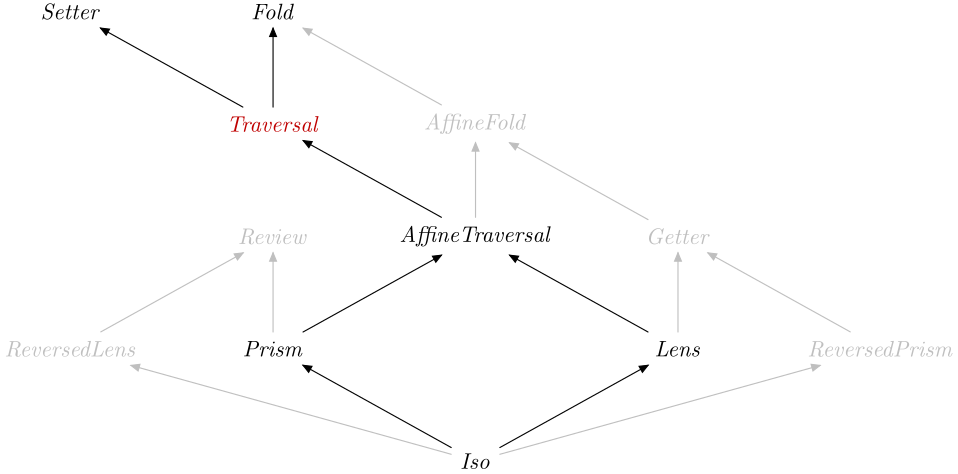

| Safe Haskell | Safe-Inferred |
|---|---|
| Language | Haskell2010 |
Optics.Traversal
Description
A Traversal lifts an effectful operation on elements to act on structures
containing those elements.
That is, given a function op :: A -> F B where F is Applicative, a
Traversal S T A BS -> F T that applies op to
all the As contained in the S.
This can be seen as a generalisation of traverse, where the type S does
not need to be a type constructor with A as the last parameter.
A Lens is a Traversal that acts on a single value.
A close relative is the AffineTraversal, which is a
Traversal that acts on at most one value.
Synopsis
- type Traversal s t a b = Optic A_Traversal NoIx s t a b
- type Traversal' s a = Optic' A_Traversal NoIx s a
- traversalVL :: TraversalVL s t a b -> Traversal s t a b
- traverseOf :: (Is k A_Traversal, Applicative f) => Optic k is s t a b -> (a -> f b) -> s -> f t
- traversed :: Traversable t => Traversal (t a) (t b) a b
- both :: Bitraversable r => Traversal (r a a) (r b b) a b
- forOf :: (Is k A_Traversal, Applicative f) => Optic k is s t a b -> s -> (a -> f b) -> f t
- sequenceOf :: (Is k A_Traversal, Applicative f) => Optic k is s t (f b) b -> s -> f t
- transposeOf :: Is k A_Traversal => Optic k is s t [a] a -> s -> [t]
- mapAccumROf :: Is k A_Traversal => Optic k is s t a b -> (acc -> a -> (b, acc)) -> acc -> s -> (t, acc)
- mapAccumLOf :: Is k A_Traversal => Optic k is s t a b -> (acc -> a -> (b, acc)) -> acc -> s -> (t, acc)
- scanr1Of :: Is k A_Traversal => Optic k is s t a a -> (a -> a -> a) -> s -> t
- scanl1Of :: Is k A_Traversal => Optic k is s t a a -> (a -> a -> a) -> s -> t
- rewriteMOf :: (Is k A_Traversal, Monad m) => Optic k is a b a b -> (b -> m (Maybe a)) -> a -> m b
- transformMOf :: (Is k A_Traversal, Monad m) => Optic k is a b a b -> (b -> m b) -> a -> m b
- failover :: Is k A_Traversal => Optic k is s t a b -> (a -> b) -> s -> Maybe t
- failover' :: Is k A_Traversal => Optic k is s t a b -> (a -> b) -> s -> Maybe t
- backwards :: Is k A_Traversal => Optic k is s t a b -> Traversal s t a b
- partsOf :: forall k is s t a. Is k A_Traversal => Optic k is s t a a -> Lens s t [a] [a]
- singular :: forall k is s a. Is k A_Traversal => Optic' k is s a -> AffineTraversal' s a
- adjoin :: (Is k A_Traversal, Is l A_Traversal) => Optic' k is s a -> Optic' l js s a -> Traversal' s a
- data A_Traversal :: OpticKind
- type TraversalVL s t a b = forall f. Applicative f => (a -> f b) -> s -> f t
- type TraversalVL' s a = TraversalVL s s a a
Formation
type Traversal s t a b = Optic A_Traversal NoIx s t a b Source #
Type synonym for a type-modifying traversal.
type Traversal' s a = Optic' A_Traversal NoIx s a Source #
Type synonym for a type-preserving traversal.
Introduction
traversalVL :: TraversalVL s t a b -> Traversal s t a b Source #
Build a traversal from the van Laarhoven representation.
traversalVL.traverseOf≡idtraverseOf.traversalVL≡id
Elimination
traverseOf :: (Is k A_Traversal, Applicative f) => Optic k is s t a b -> (a -> f b) -> s -> f t Source #
Map each element of a structure targeted by a Traversal, evaluate these
actions from left to right, and collect the results.
Computation
traverseOf(traversalVLf) ≡ f
Well-formedness
traverseOfopure≡purefmap(traverseOfo f) .traverseOfo g ≡getCompose.traverseOfo (Compose.fmapf . g)
Additional introduction forms
traversed :: Traversable t => Traversal (t a) (t b) a b Source #
Construct a Traversal via the Traversable class.
traverseOftraversed=traverse
both :: Bitraversable r => Traversal (r a a) (r b b) a b Source #
Traverse both parts of a Bitraversable container with matching types.
Note: for traversing a pair or an Either it's better to use
each and chosen respectively to reduce
potential for bugs due to too much polymorphism.
>>>(1,2) & both %~ (*10)(10,20)
>>>over both length ("hello","world")(5,5)
>>>foldOf both ("hello","world")"helloworld"
Since: 0.4
Additional elimination forms
forOf :: (Is k A_Traversal, Applicative f) => Optic k is s t a b -> s -> (a -> f b) -> f t Source #
A version of traverseOf with the arguments flipped.
sequenceOf :: (Is k A_Traversal, Applicative f) => Optic k is s t (f b) b -> s -> f t Source #
Evaluate each action in the structure from left to right, and collect the results.
>>>sequenceOf each ([1,2],[3,4])[(1,3),(1,4),(2,3),(2,4)]
sequence≡sequenceOftraversed≡traverseidsequenceOfo ≡traverseOfoid
transposeOf :: Is k A_Traversal => Optic k is s t [a] a -> s -> [t] Source #
mapAccumROf :: Is k A_Traversal => Optic k is s t a b -> (acc -> a -> (b, acc)) -> acc -> s -> (t, acc) Source #
This generalizes mapAccumR to an arbitrary Traversal.
mapAccumR≡mapAccumROftraversed
mapAccumROf accumulates State from right to left.
mapAccumLOf :: Is k A_Traversal => Optic k is s t a b -> (acc -> a -> (b, acc)) -> acc -> s -> (t, acc) Source #
This generalizes mapAccumL to an arbitrary Traversal.
mapAccumL≡mapAccumLOftraverse
mapAccumLOf accumulates State from left to right.
rewriteMOf :: (Is k A_Traversal, Monad m) => Optic k is a b a b -> (b -> m (Maybe a)) -> a -> m b Source #
Rewrite by applying a monadic rule everywhere you recursing with a
user-specified Traversal.
Ensures that the rule cannot be applied anywhere in the result.
Since: 0.4.1
transformMOf :: (Is k A_Traversal, Monad m) => Optic k is a b a b -> (b -> m b) -> a -> m b Source #
Transform every element in a tree using a user supplied Traversal in a
bottom-up manner with a monadic effect.
Since: 0.4.1
failover :: Is k A_Traversal => Optic k is s t a b -> (a -> b) -> s -> Maybe t Source #
Try to map a function over this Traversal, returning Nothing if the
traversal has no targets.
>>>failover (element 3) (*2) [1,2]Nothing
>>>failover _Left (*2) (Right 4)Nothing
>>>failover _Right (*2) (Right 4)Just (Right 8)
failover' :: Is k A_Traversal => Optic k is s t a b -> (a -> b) -> s -> Maybe t Source #
Version of failover strict in the application of f.
Combinators
backwards :: Is k A_Traversal => Optic k is s t a b -> Traversal s t a b Source #
This allows you to traverse the elements of a traversal in the opposite
order.
partsOf :: forall k is s t a. Is k A_Traversal => Optic k is s t a a -> Lens s t [a] [a] Source #
partsOf turns a Traversal into a Lens.
Note: You should really try to maintain the invariant of the number of children in the list.
>>>('a','b','c') & partsOf each .~ ['x','y','z']('x','y','z')
Any extras will be lost. If you do not supply enough, then the remainder will come from the original structure.
>>>('a','b','c') & partsOf each .~ ['w','x','y','z']('w','x','y')
>>>('a','b','c') & partsOf each .~ ['x','y']('x','y','c')
>>>('b', 'a', 'd', 'c') & partsOf each %~ sort('a','b','c','d')
So technically, this is only a Lens if you do not change the number of
results it returns.
singular :: forall k is s a. Is k A_Traversal => Optic' k is s a -> AffineTraversal' s a Source #
Convert a traversal to an AffineTraversal that visits the first element
of the original traversal.
For the fold version see pre.
>>>"foo" & singular traversed .~ 'z'"zoo"
Since: 0.3
Monoid structure
Traversal admits a (partial) monoid structure where adjoin combines
non-overlapping traversals, and the identity element is
ignored (which traverses no elements).
If you merely need a Fold, you can use traversals as folds and combine
them with one of the monoid structures on folds (see
Optics.Fold). In particular, summing can be used to concatenate
results from two traversals, and failing will returns results from the
second traversal only if the first returns no results.
There is no Semigroup or Monoid instance for Traversal, because there
is not a unique choice of monoid to use that works for all optics, and the
(<>) operator could not be used to combine optics of different kinds.
adjoin :: (Is k A_Traversal, Is l A_Traversal) => Optic' k is s a -> Optic' l js s a -> Traversal' s a infixr 6 Source #
Combine two disjoint traversals into one.
>>>over (_1 % _Just `adjoin` _2 % _Right) not (Just True, Right False)(Just False,Right True)
Note: if the argument traversals are not disjoint, the result will not
respect the Traversal laws, because it will visit the same element multiple
times. See section 7 of
Understanding Idiomatic Traversals Backwards and Forwards
by Bird et al. for why this is illegal.
>>>view (partsOf (each `adjoin` _1)) ('x','y')"xyx">>>set (partsOf (each `adjoin` _1)) "abc" ('x','y')('c','b')
For the Fold version see summing.
Since: 0.4
Subtyping
data A_Traversal :: OpticKind Source #
Tag for a traversal.
Instances

van Laarhoven encoding
The van Laarhoven representation of a Traversal directly expresses how
it lifts an effectful operation A -> F B on elements to act on structures
S -> F T. Thus traverseOf converts a Traversal to a TraversalVL.
type TraversalVL s t a b = forall f. Applicative f => (a -> f b) -> s -> f t Source #
Type synonym for a type-modifying van Laarhoven traversal.
type TraversalVL' s a = TraversalVL s s a a Source #
Type synonym for a type-preserving van Laarhoven traversal.